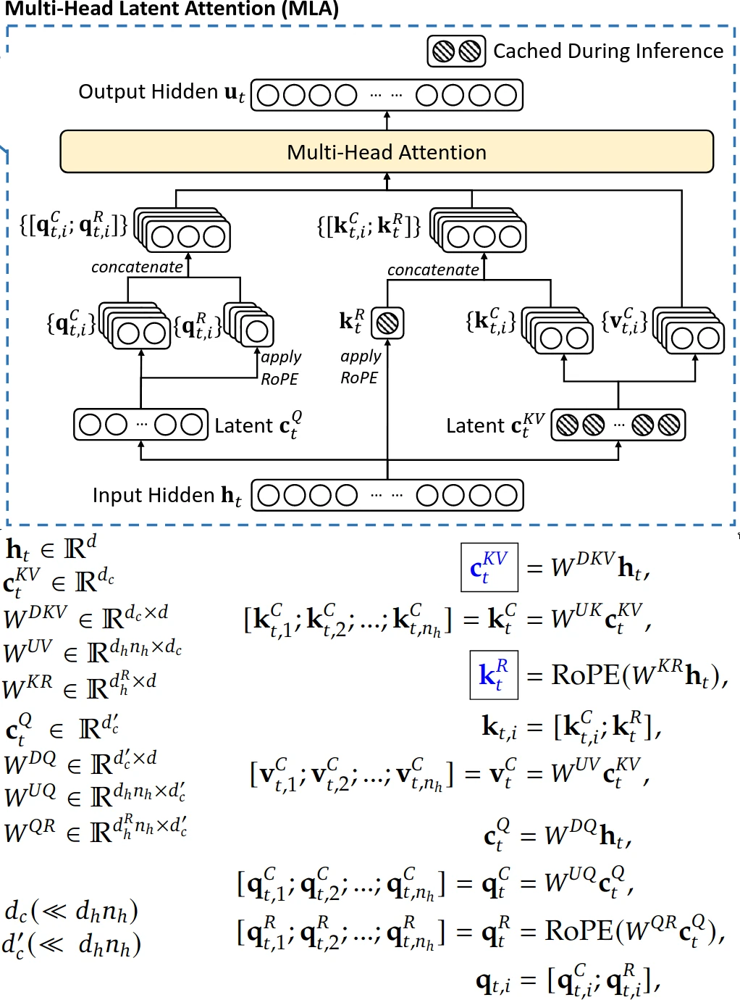

My notes on DeepSeek-V2's (but also used in V3) multihead latent attention
Written by latentCall145 on May 24, 2025 (changelog)

Multihead latent attention diagram and equations.
I was on a plane recently so I had a bit of time to read something! I remember hearing things about V3's multihead latent attention (MLA) and FP8 training, so I thought I should read it. It's packed with info and didn't even get halfway through by the end of the flight. However, I did mostly get past the sections on training, so that's what I'll talk about. This article will just be about multihead latent attention (MLA) because there's quite a bit to unpack.
With past transformer architectures, there was a big pain point in inference because of this thing called KV cache. We need KV cache in inference (as opposed to training) because the transformer runs many times per prompt, once for every token generated. Now, the transformer needs all of its past tokens to generate the next token, but the transformer's architecture makes it such that the intermediate outputs (specifically the keys/values within each layer, hence key-value cache AKA KV cache) of past tokens can be reused for future tokens. This saves a lot of computation, but now we have to store the KV cache in memory, which you know, takes up a lot of memory. Also, because memory operations are relatively slow on GPUs (compared to matrix multiplications), ideally we'd want to compress our KV cache to maximize performance.
Normally, a transformer projects some hidden state into queries, keys, and values, then stores the keys and values into memory as is. We don't store queries because during inference, it only consists of the next token being predicted, so there's nothing to cache. In code, it looks like this:
def multi_head_attention(hidden_states: (B 1 E), k_cache: (B L E), v_cache: (B L E)):
# B = batch dimension
# L = length dimension (aka how many tokens have been predicted so far?)
# E = embedding dimension (aka how many numbers do we need to describe one token?)
# H = number of heads
# D = dimension per head
# hidden_states represents the intermediate representations for predicting the next token
# k/v_cache stores past keys and values; note that every layer has its own KV cache
query = hidden_states @ query_proj # (B 1 E) @ (E HD) = (B 1 HD)
key = hidden_states @ key_proj # (B 1 E) @ (E HD) = (B 1 HD)
value = hidden_states @ value_proj # (B 1 E) @ (E HD) = (B 1 HD)
keys = k_cache = concat((k_cache, key), dim=1) # (B (L-1) HD) -concat-> (B L HD)
values = v_cache = concat((v_cache, value), dim=1) # (B (L-1) HD) -concat-> (B L HD)
# multi-head attention
query = rearrange(query, 'B 1 (HD) -> (BH) 1 D')
keys = rearrange(keys, 'B L (HD) -> (BH) L D')
values = rearrange(values, 'B L (HD) -> (BH) L D')
attn_matrix = query @ keys.transpose(1, 2) # (BH 1 D) @ (BH D L) -> (BH 1 L)
attn_matrix = softmax(attn_matrix, dim=-1) # (BH 1 L)
attention_outputs = attn_matrix @ values # (BH 1 L) @ (BH L D) -> (BH 1 D)
attention_outputs = rearrange(attention_outputs, '(BH) 1 D -> B 1 (HD)') # (B 1 E)
return attention_outputs
MLA does two things differently to compress keys and values. First, the hidden state is projected into a compressed vector, which is then projected back up into keys and values. Then, we only store the compressed vector in our cache. The second thing requires its own section.
To store positional information (via RoPE) in the keys, the hidden state is projected into another latent vector where RoPE is applied (this vector is also cached). Then, this vector is appended to the key vector generate from the hidden state.
The reason MLA does this requires a bit of context on an inference optimization for normal transformers. Since Q @ K.T is equal to (hidden_states @ query_proj) @ (hidden_states @ key_proj).T = (hidden_states @ query_proj) @ key_proj.T @ hidden_states.T = hidden_states @ (query_proj @ key_proj.T) @ hidden_states.T. Since query_proj and key_proj are both fixed at inference, we can "absorb" these matrices as a single matrix, let's call it qk_proj. So, before any inference, we can pre-compute qk_proj. Then during each step in inference, instead of computing (hidden_states @ query_proj) @ (hidden_states @ key_proj).T (three matrix multiplications), we only have to do hidden_states @ qk_proj @ key_proj.T (only two matrix multiplications)!
Back to positional encoding. The normal way to store positional information in the keys is by applying RoPE after the keys are calculated. However, this means that Q @ K.T = (hidden_states @ query_proj) @ RoPE(hidden_states @ key_proj).T = hidden_states @ query_proj @ RoPE(key_proj.T @ hidden_states.T, transposed=True). However, we can't absorb query_proj and key_proj.T because the RoPE is between these two matrices and we can't move the RoPE out of the way, blocking us from the above inference optimization :( However, by having a separate (in MLA they call this "decoupled"), small part of the queries and keys for position information, we can still still use positional information while also using the inference optimization for the rest of the queries and keys.
And then for MLA, instead of K = (hidden_states @ key_proj), it's K = compressed_kv @ key_proj. Actually, the QK projection gets better because key_proj will roughly be of shape (C, HD) where C is the compressed KV dimension, H is the number of heads, and D is the dimension per head. Note that C must be much smaller than HD for MLA to be efficient. Then, the QK projection will be query_proj @ key_proj.T. Tracing the shapes, query_proj is shape (E, HD) and key_proj.T is (HD, C). So, the QK projection will have shape (E, C), which is smaller than (E, E) ***elaborate***. Now, it's unclear to me why we can't just apply RoPE to the compressed key vectors; it probably has to do with the projection messing with the positional information, but I don't know the specifics.
And then the pseudocode for MLA goes like this:
def multihead_latent_attention(hidden_states: (B 1 E), kv_cache: (B (L-1) C), keys_rope: (B (L-1) R):
# B = batch dimension
# L = length dimension (aka how many tokens have been predicted so far?)
# E = embedding dimension (aka how many numbers do we need to describe one token?)
# H = number of heads
# D = dimension per head
# C = compressed KV cache dimension per token; C is much smaller than HD
# R = RoPE dimension per head
# hidden_states represents the intermediate representations for predicting the next token
# kv_cache stores compressed versions of past keys and values; every layer still has its own KV cache
# NOTE: this doesn't show the two-multiplication inference optimization mentioned above
query = hidden_states @ query_proj # (B 1 E) @ (E HD) = (B 1 HD)
query_rope = hidden_states @ query_rope_proj # (B 1 E) @ (E HR) = (B 1 HR)
kv = hidden_states @ down_kv_proj # (B 1 E) @ (E C) = (B 1 C)
kv_cache = concat((kv_cache, kv), dim=1) # (B (L-1) C) -concat-> (B L C)
key_rope = hidden_states @ key_rope_proj # (B 1 E) @ (E R) = (B 1 R); yes the proj is (E R) and not (E HR)
keys_rope = concat((keys_rope, key_rope), dim=1) # (B (L-1) R) -concat-> (B L R)
keys = kv_cache @ key_proj # (B L C) @ (C HD) = (B L HD)
values = kv_cache @ value_proj # (B L C) @ (C HD) = (B L HD)
# multi-head attention
query = rearrange(query, 'B 1 (HD) -> (BH) 1 D')
query_rope = rearrange(query_rop, 'B 1 (HR) -> (BH) 1 R')
query = concat((query, query_rope), dim=-1) # (BH 1 (D+R))
keys = rearrange(keys, 'B L (HD) -> (BH) L D')
keys_rope = repeat(keys_rope, 'B L R -> B L (HR)')
keys_rope = rearrange(keys_rope, 'B L (HR) -> (BH) L R')
keys = concat((keys, keys_rope), dim=-1) # ((BH) L (D+R))
values = rearrange(values, 'B L (HD) -> (BH) L D')
attn_matrix = query @ keys.transpose(1, 2) # (BH 1 (D+R)) @ (BH (D+R) L) -> (BH 1 L)
attn_matrix = softmax(attn_matrix, dim=-1) # (BH 1 L)
attention_outputs = attn_matrix @ values # (BH 1 L) @ (BH L D) -> (BH 1 D)
attention_outputs = rearrange(attention_outputs, '(BH) 1 D -> B 1 (HD)') # (B 1 E)
return attention_outputs
Now, V3 also compresses the queries and decompresses them before attention to save memory, but it doesn't reduce any KV cache, so I'm just going to ignore it.
From the V3 paper, we have these model architecture hyperparameters:
Assuming bfloat16 activations and without MLA or decoupled RoPE, the total amount of KV cache per token would be equal to (Y layers) * (H heads / layer) * (D floats/head) * 2 * (2 bytes/float). The random 2 is because we must store keys AND values (instead of just keys). With the current setup, that amounts to 61*128*128*2*2 bytes = 3.8125 MiB per token.
However, with MLA, the total amount of KV cache per token using is only (Y layers) * (C+R floats/layer) * (2 bytes/float), equaling 61*(512+64)*2 = 68.625 KiB per token. This is 56.89x less memory than standard multihead latent attention, so it's an absolute wonder that MLA performs just as well as standard multihead attention! For reference, Llama 3 8B has Y=32, H=8 (technically H=32 but each group of four query heads share a single key/value head, this is called grouped-query attention or GQA, I say H=8 because that's how many key/value heads will be stored in KV cache), and D=128. Then, the KV cache usage per token for Llama 3 8B would be 32*8*128*2*2 = 128 KiB. That means that DeepSeek-V3, with 37B active parameters and 671B total parameters, still uses 1.87x less KV cache than an 8B model!
The number of exclamation points I used here just shows how insanely efficient MLA is. Still, this just scratches the surface of what DeepSeek-V3 has to offer. Stay tuned for more...